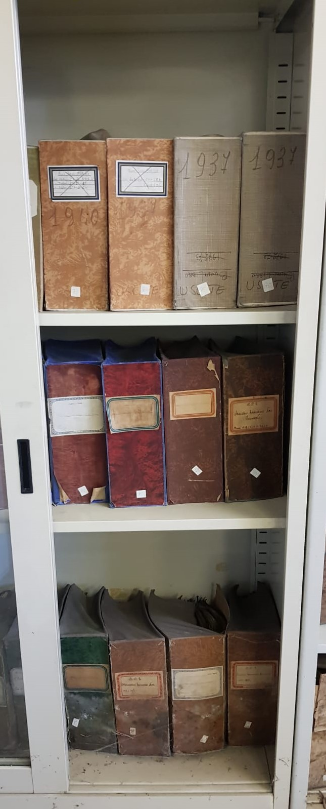

Archivio - 1
Piano -1
Oggetto numero 1
Armadio numero 1

Descrizione:
Il seguente armadio, suddiviso in 3 piani, contiene tredici fonti scritte prodotte
tra gli anni trenta e quaranta del novecento. Le seguenti fonti appaiono degradate a causa degli allagamenti che ha subito la stanza che le contiene.